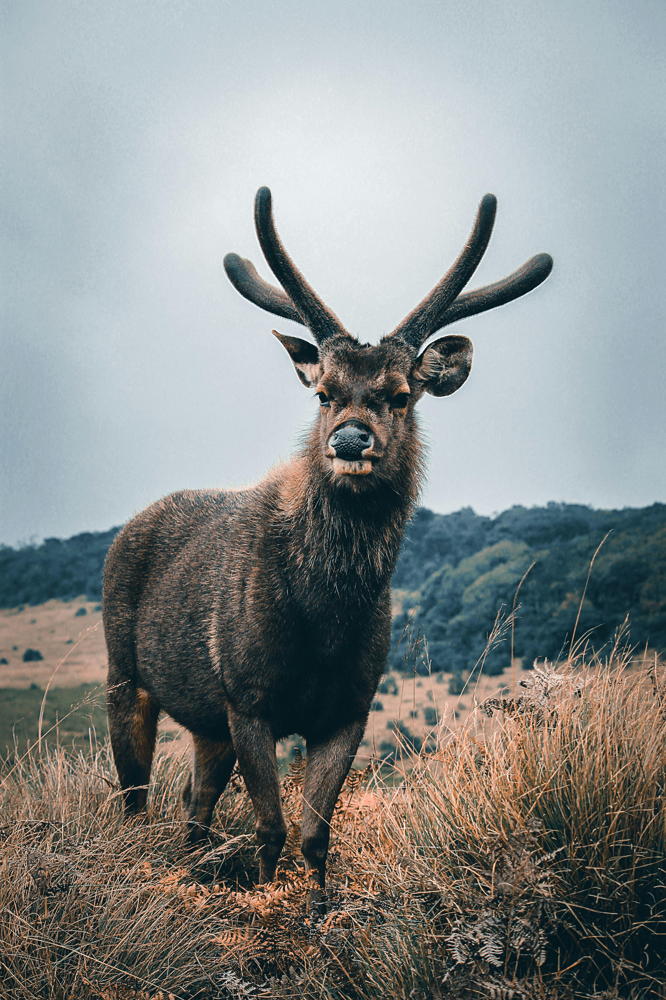

This is a page about deers, the deer is a mammal that are notable for having antlers in most males
and two large and two small hooves on each foot.
In all but one species of deer, males carry antlers; in the reindeer (Rangifer tarandus), both sexes carry antlers. The single antlerless form, the Chinese water deer (Hydropotes inermis), reflects an earlier pre-antler condition, as is shown by the fossil record.
In this primitive condition males have long, sharp upper canines, called tusks, that are used for slashing and stabbing in territorial contests. Some species carry both antlers and tusks and show a progression of increased antler size and complexity with decreased size and functional structure of the tusks.
(Musk deer resemble primitive deer in that males are armed with tusks.)
Deer have several other distinguishing characteristics. All deer lack the gall bladder. Females have four teats. Deer may have scent glands on their legs (metatarsal, tarsal, and pedal glands), but they do not have rectal, vulval, or preputal glands.

Source:
Brittanica Website
Deer eat a variety of food types, including browse (leafy parts of woody plants), forbs (herbaceous broad-leaved plants, including agricultural crops),
hard and soft mast (seeds), grass and mushrooms/lichens.
Browse and forbs are the most important forages supplying the nutritional needs of deer because they provide over 80% of the diet in all seasons except during autumn.
Mast is highly preferred, so its presence drives the seasonal variation in forage selection.
Mast consumption increases from 11% during summer (primarily soft mast, such as berries) up to 28% during autumn (primarily hard mast, such as acorns).
Leaf buds and evergreen leaves are especially important during winter in northern areas. A wide variety of agricultural crops are used readily whenever available because they tend to be highly nutritious, palatable and readily digestible.
Source:
Mississipi State University - Deer Ecology & ManagementDeers are native to all continents except Australia and Antartica.
Most species of deer require good cover to deliver their young and raise them. This is because they use cover to help conceal fawns from predators, often leaving them hidden during the day for extended periods – something which is extremely important to a young deer’s survival.
The forest also provides numerous food sources for a deer to exploit.
A deer’s quality of life depends on their habitat. After all, they get their food from their habitats, and the quality and quantity of food may vary per habitat.
Source:
Brittanica Websiteworlddeer.org
How many deer species are there in Singapore?
There is only 1 deer species in Singapore!
The Sambar Deer is the only deer species in singapore.
There is a species called mousedeer and althought it has deer in its name but it's not in the same family as deers or rodents
